Technical introduction to Robust methods in regression
Notation
Consider the usual regression model\[ y_i = x_i^T\beta +u_i \qquad i=1, \ldots, n. \]
where $u_i$ are random errors which have common variance equal to $\sigma^2$ and are independent from the covariates xi. β, the location component of the linear model, is the parameter of interest. σ is the so called scale component of the linear model.
Given an estimator of $\beta$, say 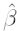 the residuals are defined as
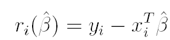
The traditional least squares estimate of β is denoted with
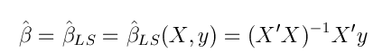
We are concerned with the case where a certain proportion of the observations may not follow model above. Traditional robust estimators attempt to limit the influence of outliers by replacing in the estimation of β the square of the residuals with a less rapidly increasing loss function or by a function ρ of the residuals themselves which is bounded.
The ρ function
In the literature of robust statistics the ρ function denotes a function that
- ρ(x) is a non decreasing function of |x|
- ρ(0)=0
- ρ(x) is increasing for x >0 such that ρ(x)< ρ(∞)
Perhaps the most popular choice for the ρ function in is Tukey’s biweight (bisquare) function

Function ρ for Tukey's biweight is implemented in routine TBrho.
The ψ function
In the literature of robust statistics a ψ (psi) function denotes a function ψ which is the derivative of a ρ function 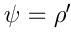 such that
- ψ is odd and ψ(x)≥0 for x≥0
Function ψ for Tukey's biweight
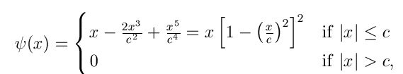
is implemented in routine TBpsi.
Regression, scale and affine equivariance
We say that an estimate 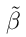 of 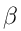 is regression, scale and affine equivariant, if it satisfies the following three properties: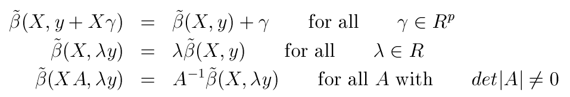
These are desirable properties because they allow us to know how the estimate changes under linear transformations of the data.
The regression M-estimate of location
The regression M-estimate of location (say 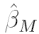) is the value that minimizes the following objective function (eq. 2)
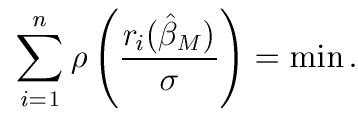
Differentiation of eq. (2) gives
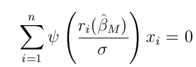
Remark 1: If function ψ is monotone the solution to this equation are called monotone regression M estimates, while if ψ is redescending the solution to are called redescending regression M-estimates.
Remark 2: it is possible to show that the regression M estimates have the following asymptotic distribution:
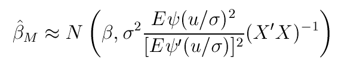
Thus the approximate covariance matrix of an M-estimate differs only by a constant factor from the LS estimate. Hence, its efficiency for normal perturbations does not depend on X.
The regression M-estimate of scale
In equation (2) it is assumed that σ is known. However, when this condition is not fulfilled, it is necessary to use an auxiliary robust scale estimate 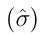 to make 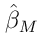 scale equivariant.
An M-estimator of scale 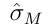 is defined as the solution to the following equation
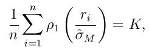
where 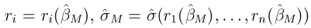 and K is a constant which is linked to the breakdown point of the scale estimator.
It is worthwhile to notice that in this equation we have used the symbol ρ1, because the ρ function which is used to obtain the scale estimator is not necessarily the same which is used in (2).
It is interesting to notice that if in equation (4) we choose ρ1 =I(|t|>1) and K=1/2 we obtain as a solution for the M estimator of scale the median of the absolute values of the residuals. In general if ρ1 =I(|t|>1), we obtain as a solution the h-th order statistic of the |r|i with h=n-[nK].
The regression S-estimates and the LMS estimate
If we take the minimum value of 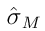 which satisfies equation (4), we obtain the so called S-estimate of scale 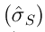 and the associated estimate of the vector of regression coefficients 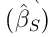.The word S estimator comes from the fact that it is derived from a scale statistic in an implicit way. More formally
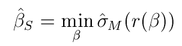
where 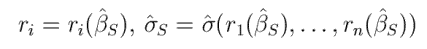.Because an S estimate is an M-estimate, it follows that the asymptotic distribution of an S estimate is the same as that of an M estimate. To see this note that 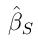satisfies the following inequality:
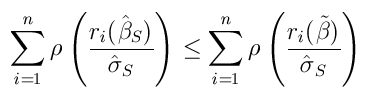
for all 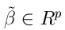.
The regression S estimate of location and scale can be found using routine Sreg. For each elemental subset which is extracted (which satisfies certain conditions) we compute the minimum value of the scale calling routine minscale. For the subsets with the 5 best (bestr) minimum values of the scale a series of refining steps (C-steps) are done.
Remark: if we choose as rho function ρ(t)=I(|t|>1) and in equation (4) we put K=n/2 we minimize the median of the squares (absolute values) of the residuals and we therefore obtain the Least Median of Squares estimator (LMS).
In symbols, call
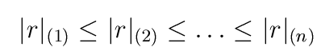
the ordered absolute values of the residuals, 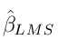is defined as
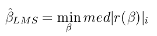
can be computed using routine LXS (option lms=1)
More generally, for a general K a solution 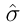 to equation (4) is the h order statistics of |r|i (that is |r|(h)), with h=n-[nK].
The regression MM-estimate of location
The MM-regression estimator 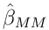 is defined as any local minimum of the following f function
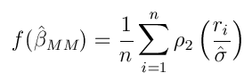
where ρ2 is possibly another ρ function. Function f
is minimized with respect to β for fixed
 . Among the possible local
minima which have been found, we choose the one for which this equation
is smallest. In this equation
is any scale estimator
satisfying equation (4). It is common however to use
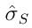 (the minimum value).
. Among the possible local
minima which have been found, we choose the one for which this equation
is smallest. In this equation
is any scale estimator
satisfying equation (4). It is common however to use
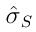 (the minimum value).
The consistency and asymptotic distribution of MM-estimates when the observed data follow the central model (1) has been studied by Yohai (1987) for the case of random covariates, and by Salibian-Barrera (2006) for fixed designs. Consistency and asymptotic distribution of S-estimators has been studied by Rousseeuw and Yohai (1984), Davies (1990) and Salibian-Barrera (2006).
can be computed using routines MMreg and MMregcore. More precisely, MMregcore assumes that user supplies an estimate of σ, on the other hand, function MMreg uses function Sreg to preliminary compute an estimate of σ and β.
The regression L-estimate of scale and the LTS estimate
An alternative to using an M-scale is to use an L-estimate of scale. The we can define scale estimates as linear combinations of the |r|(i) in one of the two following forms:
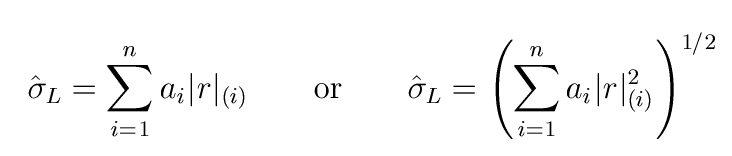
A particular version of the second form is the α-trimmed squares scale
where α is in interval (0,1) and n-h=[n α] of the largest absolute residuals
are trimmed. If α=1/2 the corresponding regression estimate is called the
least trimmed squares (LTS)
 . More formally
. More formally
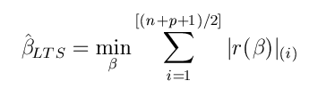
Notice that asymptotically [(n+p+1)/2] tends to 1/2.
can be computed
using routines LXS (option lms=0) , while the trimming
proportion is controlled by option alpha